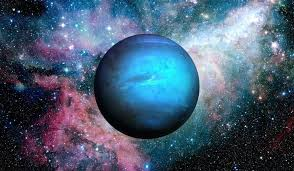

The Neptune
Solar System Sun Mercury Venus Earth Mars Jupiter Saturn Uranus Neptune Pluto
Definition

Neptune is the eighth and farthest known planet from the Sun in the Solar System. ... Neptune
is 17 times the mass of Earth and is Slightly more massive than its near-twin Uranus, which is
15 times the mass of Earth and slightly larger than Neptune. Due to its blue coloration, Neptune
was named after the Roman god of Sea.
Facts
-It takes Neptune 164.8 Earth years to orbit the Sun.
-Neptune was discovered by Jean Joseph Le Verrier.
-Neptune is the Roman God of the Sea.
-Neptune has the second largest gravity of any planet.
-The orbit path of Neptune is approximately 30 astronomical units (AU) from the Sun.
-The largest Neptunian moon. Triton, was discovered just 17 days after Neptune itself was discovered.
-Neptune has a storm similar to the Great Red Spot on Jupiter.
-Neptune also has a second storm called the Small Dark Spot.
-Neptune spins very quickly on its axis.
-Only one spacecraft, the Voyager 2, has flown past Neptune.
-The climate on Neptune is extremely active.
-Like the other outer planets, Neptune posseses a ring system.
-Neptune has 14 known moons.
-Neptune has an average surface temperature of -214 degrees Celsius.
Profile
Mass :102,410,000,000,000,000 billion kg 
Equitorial Diameter :49,528 km
Polar Diameter :48,682 km
Equitorial Circumference :155,600 km
Known Moons 14
Notable Moons :Triton
Known Rings :5
Orbit Distance :4,498,396,441 km (30.10 AU)
Orbit Period :60,190.03 Earth days (164.79 Earth years)
Surface Temperature :-201 degrees Celsius
First Record :September 23rd 1846
Recorded by :Urbain Jean Joseph Le Verrier & Johann Galle